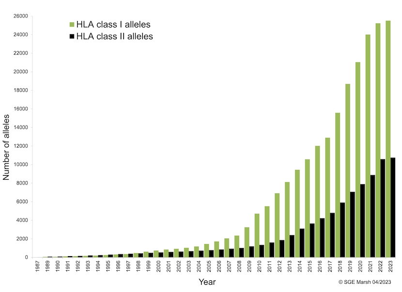

flowchart
extraction_process{{generate BAMs with selected reads}}-.->merge_bam
generate_fastqs{generate\nFASTQs R1 & R2}
merge_bam[merged BAM] --> generate_fastqs
generate_fastqs --> fq1
generate_fastqs --> fq2
merge_bam -->t1k[T1K]
bed_mhc[\8 indexes files\]-->hisat[HISATGENOTYPE]
subgraph typing HLA genes
fq1 --> hisat
fq2 --> hisat
fq1 --> hlahd[HLAHD]
fq2 --> hlahd[HLAHD]
t1k --> t1k_report[one\nT1K report file\nper sample]
hlahd --> hlahd_reports[two\nHLAHD report files\nper gene/sample]
hisat --> hisat_reports[one\nHISATGENOTYPE report file\nper index/gene/sample]
end
subgraph generate tsv
hisat_reports -->|for each gene & all indexes|hisat_formater(keep MAX nb_reads aligned\ncompute score=abundance x nb_reads/100\nmean of score of indexes per allele\nextract number of indexes per allele\nif needed, cast 4-fields to 3-fields\nif casted, sum of scores & sum of nb_indexes)
hlahd_reports -->|for each gene|hlahd_formater(extract nb_reads per gene/allele/exon\nsum the nb_reads per gene/allele\nextract nb of exons per gene/allele )
t1k_report -->t1k_formater(extract abundance estimation per gene/allele\nextract genotyping quality pergene/allele)
hisat_formater --> hisat_tsv_file[hisat formated tsv file]
hlahd_formater --> hlahd_tsv_file[hlahd formated tsv file]
t1k_formater --> t1k_tsv_file[t1k formated tsv file]
hisat_tsv_file --> merge_tsv{merge tsv files}
hlahd_tsv_file --> merge_tsv
t1k_tsv_file --> merge_tsv
end
merge_tsv --> all_typers[merged report per sample]
hla_metatyper
Project purpose
We seek to type alleles for the classical HLA class I and II genes from the QGP cohort data containing 14,669 samples to create an imputation database. These data are WGS and we have at our disposal BAMs files aligned to HG38 using an alt-aware mapper. To do so, we selected 3 different typers (HISATGenotype, HLA-HD and T1K) for which scripts to update the index files on the IMGT/HLA 3.49 database have been developed. An in-house script has been developed to extract the relevant reads from the BAM files before entering them into the different typer files. The typing data (26 common genes, 3 field resolution) from the 3 typers are processed using an in-house N-1 algorithm to stratify the results. An imputation base built from the most qualitative data is then constructed, and allows us to type new WGS data very quickly.
IMGT HLA
Most typers are provided with outdated index files. Considering that the IMGT HLA database is updated several times a year and that the number of class I and II alleles is increasing significantly, it seemed important to use a recent version and to make sure that the same versions are used between all typers.

Running softwares
Note
TODO:
- detail the parameters used for each
Output data
HISAT-GENOTYPE
HisatGenotype generates one output file per typed gene for each samples and each indexes. If no result have been founded for a gene, no output file will be created for this gene.
Output will be found by default in a folder called hisatgenotype_out. Each output file is composed of 2 parts : first one describes top ten alleles with the most number of mapped or compatible reads. Second one describes a true alleles list generated after applying a statistical model on the first list.
HLAHD
For one sample, many files are produced by HLAHD. Only *_final.result.txt and *_gene.est.txt are kept and parsed. First file contains list of allele’s couple for each typed genes (one line per gene, Not typed if no result), second file contains list of “Best Allele Pairs” (1 line per allele couple) with details about number of reads aligned for each exons contained in the index.
Warning
For all samples, some genes (i.e F & W) seems to be un-typable as a Couldn't read result file. message appears in *_final.result.txt
T1K
T1K’s output parsed is a TSV file (*_genotype.tsv) with, for each line, allele 1 and (if exists) allele 2 descriptions (name, abundance estimation and genotyping quality score). No result for a gene would produce empty description line.
Note
TODO:
comparison table of softwares outputs (filetypes, datatypes, type of results)
comparison table of softwares scores
consider introducing the fact that hisatgenotype provides a list of results while T1k and HLAHD provide pairs of alleles
remember that the formats obtained by each software are different
introduce the idea of parsing each output of each software and producing a shared standard output format
Data parsing and standard output files
The purpose of this step is to obtain a csv file per sample for each algorithm with information on the id of the sample, the name of the algorithm, the scores for the major and minor allele (if it is a heterozygote, only the major one in the opposite case) and several other different meta information for each algorithm. This kind of file will allow us to easily process data with scripts for the next steps. This step does not alter the results, although a default selection of available data in case of a tie is made. Here are the rules followed:
For HISATgenotype:
we keep only the 2 alleles with the best abundance scores from the HISAT genotype list
in the case of a single allele in the list, it is selected by default, regardless of its abundance score
from position 2 in the list of results (minority allele), in case of equality of score between several alleles, we select only one of the alleles (the first in the list)
For HLAHD:
we keep only the number of mapped reads on the first common exons (see ?@tbl-hlahd_genes_exons)
we keep only the first two alleles of the result list, even if there are several other pairs with identical numbers of reads
we rearrange the alleles of a pair from the highest number of reads to the lowest
For T1K:
- TODO: verify the method
Merge step
At the end of the previous step, we were able to obtain 14,633 x 3 files (i.e 43,699), which represents a considerable fragmentation of the information. This step consists in merging all these files to obtain a single output file, with, for each line, the information of the 3 algorithms (if they exist) for each gene and each sample. Thus, we can more easily compare the results of the 3 algorithms between them.
Note
TODO:
indicate that a merge stage is also performed that combines all the previously generated standard format files into a single file, containing the data of each gene for each sample on each line
describe the fields of this file, which will allow to quickly perform queries on the data
As described in Table 1, 2 comparison fields are added by our script. These allow us to perform simple queries to obtain a list of calls according to the criterion of equality between the algorithms.
| comparison bits | comparison integer | meaning |
|---|---|---|
| 000 | 0 | alleles are all different |
| 001 | 1 | alleles HLA-HD == alleles T1K |
| 010 | 2 | alleles HISATgenotype == alleles T1K |
| 011 | 3 | Not possible |
| 100 | 4 | alleles HISATgenotype == alleles HLA-HD |
| 101 | 5 | Not possible |
| 110 | 6 | Not possible |
| 111 | 7 | alleles are all identical |
Note
TODO:
recall that HLAHD does not type all the genes, which explains the values at 0
describe the low number of unique alleles for T1K
List the genes for which a particular effort should be made to increase the number of matching calls
List the means that can be used to do this (deleting calls considered of poor quality, lowering the definition of alleles, etc.)
How to filter results
Because all the algorithm used may provide calls for the HLA-DRB3-4-5 genes if some reads are aligned to one of these genes, even if a sample does not actually carry any copy of them, these genes are excluded from the filter step. Moreover, a specific step will be apply later in order to determine which of these genes (if any, and how many) may be associated with the DRB1 gene alleles.
HLA-HD
This is the only algorithm for which an empirical threshold value exists in the literature (TODO: need more references).
From (Butler-Laporte et al. 2023):
[..] we only used HLA calls with a mean coverage of 10 at exon 2, except for HLA-DRB2 and HLA-DRB8, where a mean coverage of 10 at exon 3 was used since these two genes do not have a second exon.
So we considered that to be retained, the number of reads of each allele (majority and minority) must be >=10. Value is similar to what we can observed in (Butler-Laporte et al. 2023).
T1K
Note
As a test, we use the value -log10(5 x 10^-8) as the T1K genotyping quality threshold because this variable is basically a P-VALUE and -log10(5 x 10^-8) is the statistical significance of a result from a GWAS. It is a measure of the level of confidence that the result obtained is significant and cannot be attributed to chance. The larger the result, the higher the confidence level and the higher the T1K genotyping quality value.
HISATgenotype
The only approach referenced in the literature is shown in (Orenbuch et al. 2020) but it is a bad idea:
The 10% threshold, previously determined by HISAT-genotype (Kim et al. 2019) for use with whole-genome sequencing, assumes that the abundance of the minor allele does not fall below a tenth of the major allele’s abundance.
Note
Obtaining a quality threshold from the literature for HISATgenotype is very difficult. However, considering the variable coming from HISAT2 and providing a number of aligned reads on each gene, and considering the average size of an exon (150bp) and an intron (1 - 50KB) in the human genome, we will use the value of 200 reads as a threshold. Below this threshold, the HISATgenotype call will be discarded and considered equal to NA.
Summary after filtering
As described in Table 2, 2 quality fields are added by our script. These allow us to perform simple queries to obtain a list of calls according to the criterion of quality filter for each algorithm. And because the comparaison fields describe in Table 1 take into account quality fields, a call that does not meet the quality criteria is considered non-existent and will not be considered in the comparison.
| quality bits | quality integer | meaning |
|---|---|---|
| 000 | 0 | all alleles pass quality filters |
| 001 | 1 | T1K alleles are LOW QUAL |
| 010 | 2 | HLA-HD alleles are LOW QUAL |
| 011 | 3 | HLA-HD and T1K alleles are LOW QUAL |
| 100 | 4 | HISATgenotype alleles are LOW QUAL |
| 101 | 5 | HISATgenotype and T1K alleles are LOW QUAL |
| 110 | 6 | HISATgenotype and HLA-HD alleles are LOW QUAL |
| 111 | 7 | HISATgenotype, HLA-HD and T1K alleles are LOW QUAL |
References
Butler-Laporte, Guillaume, Joseph Farjoun, Tomoko Nakanishi, Tianyuan Lu, Erik Abner, Yiheng Chen, Michael Hultström, et al. 2023. “HLA Allele-Calling Using Whole-Exome Sequencing Identifies 129 Novel Associations in 11 Autoimmune Diseases: A Multi-Ancestry Analysis in the UK Biobank.” medRxiv, 2023–01.
Kim, Daehwan, Joseph M Paggi, Chanhee Park, Christopher Bennett, and Steven L Salzberg. 2019. “Graph-Based Genome Alignment and Genotyping with HISAT2 and HISAT-Genotype.” Nature Biotechnology 37 (8): 907–15.
Orenbuch, Rose, Ioan Filip, Devon Comito, Jeffrey Shaman, Itsik Pe’er, and Raul Rabadan. 2020. “arcasHLA: High-Resolution HLA Typing from RNAseq.” Bioinformatics 36 (1): 33–40.